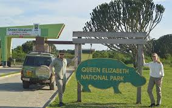
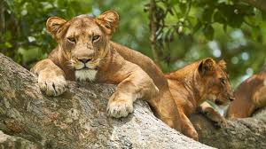
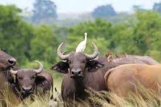
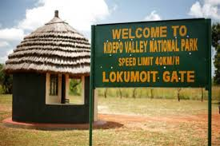
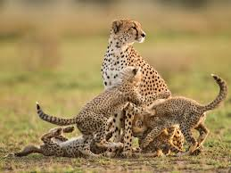
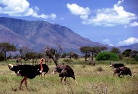
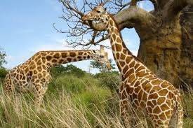
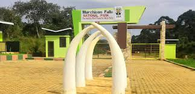
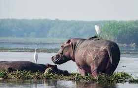
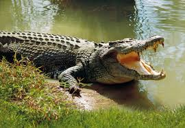

Uganda has about ten national parks with unique tourist attractions has seen below
Queen Elizabeth National Park
Welcome to uganda's biggest NP
It is located in Werstern Uganda on a Total land area of 1978km2. It is famous for Tree climbing lions in Ishasha with
activities such as boat safaris on the kazinga channel, Chimpanzee tracking in kyambura Gorge with over 600 bird species diverse landscape
including savannah, wetlands



Kidepo National Park

Welcome to the home of cheetahs
It is located in Northeastern Uganda Kaabong district near South Sudan and Kenya borders on a Total land area of 14442km 2.It is set in remote and
rugged area surrounded by the mountaian ranges well known for its beautiful nd pristine landscape. it is a home to
rare species like cheetahs(only park with them), hyenas ,Ostrich and it support activities like Game viewing
Hiking.



Murchison Falls National Park

Welcome to Uganda's first NP in 1952
The powerful falls on river Nile located in the Northwestern Uganda on a Total land area 3893km 2. The park is divided into two section by Victoria Nile (where
the Nile river forces its way through a narrow gorge ) forming plunges 43 meters over s rock ledge creating a dramic and thunderous powerful waterfall. Home to wide rage of
animals like elephants, leopards, lions and a large population of hippos and crocodiles with bird species along the Delta


Mount Elgon National Park
Welcome to World's largest volcanic caldera
It is located in the Eastern Uganda in the districts of Mbale , Kapchorwa,Buko on a Total landarea of about 1110km 2.
Mt.Elgon is an exitnct shield volcano estimated to be over 24 million years ago with the highest peak called Wagagai peak (4321 meters)
It has the sipi Falls a series of three breathtaking waterfall on the slopes. The park contains different vegetation zones including
Montane forests, bamboo forest, it the home of Elephants, buffalos, small primates like blue monkeys. it allows activities like mount climbing to Wagagai peak
birdwatching, Cultural Experiences: Visting Bagisu communities, attendimg the Imbalu circumcision festival